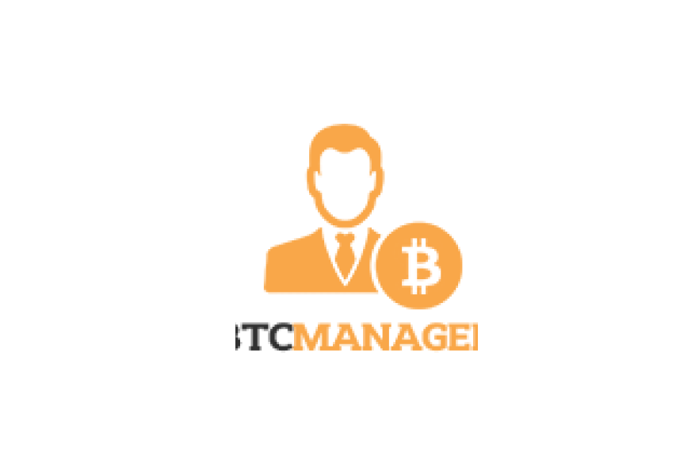
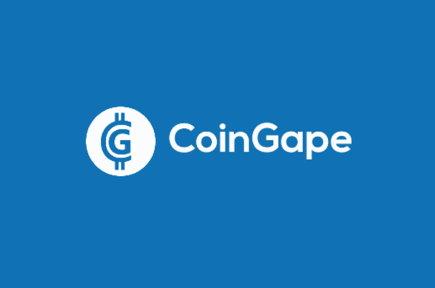

The Open
DeFi Notifications
Protocol
Get Real-time Notifications on your DeFi Positions
Download the App
The Open DeFi Notification Protocol is an open initiative to provide users with decentralized and free mobile notifications for on-chain events
Free for use: No subscription fees or ads!
Dependable: Never miss an alert
Multi network support: Ethereum, BSC, Polygon and more
Community-led and open: Public and decentralized alert nodes
Open DeFi Notifications
in the Media
Open DeFi Notification Protocol Aims to Help Traders Manage Risk
Defi.Org Accelerator Launches Open DeFi Notification Protocol by Orbs
Open DeFi Notification Protocol Aims to Help Traders Manage Risk
 Open DeFi Notifications Protocol Promises to Simplify DeFi Management for Users
 Open DeFi Notification Protocol Aims to Help Traders Manage Risk
Orbs’ Open DeFi Notification Protocol Aims to Help Traders Manage Investment Risks
Orbs Launches Open DeFi Notification Protocol to Advance Risk Management for DeFi Traders
Open DeFi: Risk Management Notification Protocol by Binance, Orbs & Moonstake